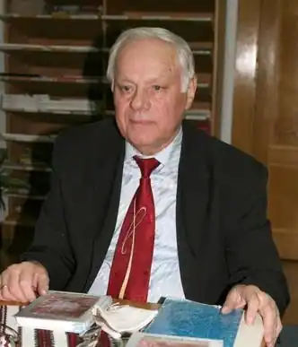

Нестор Іванович Чир народився 12 березня 1938 року в с. Новий Диків Любачівського повіту Жешувського воєводства (Польща) в багатодітній українській селянській родині. У 1945 р. під час злочинної радянсько-польської урядової змови разом із сім’єю зазнав насильницької депортації на Тернопільщину (Україна), де пройшли його дитинство і шкільні роки в с. Полівці Чортківського району. Після закінчення середньої школи навчався у Дрогобицькому нафтовому технікумі (Львівська обл.), котрий успішно закінчив у 1960 році, здобувши фах спеціаліста з буріння нафтових і газових свердловин. Того ж року направлений на роботу в м. Надвірна Івано-Франківської (тоді Станіславської) обл. У нафтовій галузі працював на рядових та різних інженерно-технічних посадах до 2003 року.
Член Національної спілки письменників України з 2002 року. Поет, нарисовець, публіцист. Автор поетичних збірок "Пізнє яблуко мого саду" (1998), "Долоні в крапельках дощу" (2001 р.), "Калиновий спалах" (2003 р.), "Паморозь дивного світіння" (2008), "Акорди срібної печалі" (сонетарій, 2009), "Білі сльози снігу" (2011), дитячої книжки "Котячий обід" (2003). Співавтор ще восьми книжок. Голова редакційних рад з видання Книги про Надвірнянщину "Страгора" (диплом 2-го ступеня Міністерства преси та інформації України) та "Надвірна: Історичний нарис", співредактор фотокнижки "Надвірна: поема в світлинах". Друкувався у відомих в Україні та поза її межами часописах "Дзвін", "Дніпро", "Тернопіль", "Німчич", "Перевал" (член редколегії), "Січеслав", "Ятрань", "Народна армія", "Радосинь" "Літературне Прикарпаття", "Золота пектораль" (член редколегії), "Літературна Україна", "Море", "Літературний Львів", Всеукраїнському дитячому журналі "Дзвіночок" (член редколегії), обласній та районній пресі. Лауреат літературних премій: Всеукраїнської ім. Ярослава Дорошенка в жанрі сонета (2011), обласних ім. Василя Стефаника та ім. Марійки Підгірянки, районної (Надвірнянський район) – ім. Надії Попович. Низка віршів стали піснями. Член ради Івано-Франківської обласної організації НСПУ з 2008 року.
Занесений в антологію українського автографа "Віщі знаки думки, серця і руки" (2010) та 1-й том двохтомного видання "Постаті" (Студії, Есеї. Сильветки. Рефлексії. 2012) академіка Володимира Качкана, книжки літературного критика Євгена Барана "У полоні стереотипів" (2009) і "Тиша запитань" (2011), літературознавця і письменника Дмитра Юсипа "Норовистий кінь Посейдона" (2005), читанку для школярів "Рідний край"(2007), студентську магістерську роботу Прикарпатського Національного університету "Поетичний світ Нестора Чира" (2005), у довідники "Гуцульщина в літературі" (1977) і "Дослідники та краєзнавці Гуцульщини" (2002), які вийшли у видавництві "Писаний камінь" (м. Косів). У липні 1987 році разом з іншими літераторами Надвірнянщини створює літературну студію "Бистрінь", яка до сьогоднішнього дня активно діє при редакції газети "Народна воля", і стає незмінним її керівником. Редактор, упорядник та співавтор двох літературних альманахів літстудії "Жниво на стерні" (1997), "Купальська злива" (2002) та двох антологій творів літстудійців "Літоплин над Бистрицею" (2007), "Сонячні обрії слова" (2012), автор багатьох передмов та рецензій на поетичні книжки прикарпатських поетів і нарисів про відомих людей Надвірнянщини. У 1989 році був серед засновників у Надвірнянському районі Всеукраїнського Товариства української мови ім. Т. Шевченка (в даний час ВУТ "Просвіта"), неодноразово обирався членом правління та ради цієї авторитетної громадської організації. В часи незалежності України чотири рази поспіль (1990, 1994, 1998, 2002 рр.) обирається депутатом Івано-Франківської обласної ради. Був серед ініціаторів створення Галицької Асамблеї демократичних рад Галичини. У 1993 році стає переможцем конкурсу "Людина року Надвірнянщини" в номінації "Громадсько-політичний діяч". Нагороджений орденом "За заслуги" III ступеня, ювілейною медаллю Президента України "Двадцять років Незалежності України"(2011), Почесною грамотою Верховної Ради України, Подякою голови обласної ради (2000), медаллю "За заслуги перед Прикарпаттям" (2011), медаллю "За заслуги перед рідною землею" (2006), багатьма грамотами голови облдержадміністрації та голови облради, Почесним знаком на честь 2000-ліття Різдва Христового, Срібним нагрудним знаком "За заслуги" II ступеня Міністерства з надзвичайних ситуацій України, цінними іменними відзнаками. У 2003 році його визнано переможцем Всеукраїнської акції "Зорі надії" з врученням Диплому Міністерства праці та соціальної політики України. Також нагороджено Подякою голови районної ради (2007, 2011) та медаллю "За заслуги перед Надвірнящиною" (2012). Ім’я Нестора Чира занесено в книгу ділової еліти Прикарпаття "Золоті імена" та в книгу "Новітня історія України: Хто є хто на Івано-Франківщині". Одружений: має дві дочки, дві внучки, одну правнучку. 15 жовтня 2014 помер. Похований у м. Надвірна на місцевом цвинтарі.